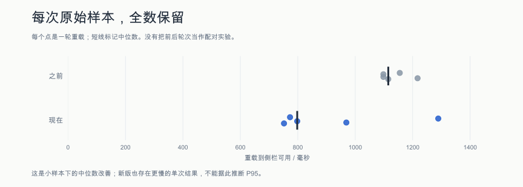

这次改变了什么
- 恢复一段会话时，只读取这段会话的正文，避免反复读取全部记录。
- 最多同时恢复四段会话；仍等全部恢复完成，才报告就绪。
稳定性守住了什么
- 32 段旧会话仍能从列表找到。
- 重载后发送新消息，实际模型输入仍带着旧会话原文。
- 强制重启后任务不会自行续跑；手动继续后提交次数仍为一次。
- 缺少“中”档时映射到“低”；只有“高”档时映射到“高”，不新增聊天错误。
每次测量都留下来

先旧版、后新版；未随机交错。比较同一构造负载下的本地启动；不代表远端模型响应速度或所有用户设备。
展开全部数值与口径
| 指标 | 之前的中位数 | 现在的中位数 | 变化 |
|---|
| 重载到侧栏可用 | 1115.0 ms | 798.0 ms | −28.4% |
| 后台就绪 | 761.5 ms | 353.0 ms | −53.6% |
| 会话恢复 | 680.0 ms | 266.1 ms | −60.9% |
重载到侧栏可用
| 各自运行序号 | 之前 | 现在 |
|---|
| 1 | 1217.0 ms | 969.0 ms |
| 2 | 1098.0 ms | 1289.0 ms |
| 3 | 1098.0 ms | 798.0 ms |
| 4 | 1155.0 ms | 773.0 ms |
| 5 | 1115.0 ms | 752.0 ms |
侧栏可用：从脚本触发扩展重载至真实侧栏的模型目录与就绪状态可用，包含100毫秒调度、驱动打开侧栏和轮询开销。后台就绪是扩展内部的分段计时。
可以怎样对外讲
在 32 段长会话的隔离测试中，By Your Side 重载至侧栏可用的中位耗时从 1.11 秒降至 0.80 秒，缩短约 28%。旧会话仍可继续，任务不会因重启自行执行。
引用条件：每段 512 KiB，每版 5 次，隔离的无头 Chrome，真实扩展，本机脚本模型。
- 每版仅五次样本，不据此推断 P95 或长期稳定性；新版也有单次比旧版更慢。
- 日常侧栏已确认可用；日常真实数据上的精确耗时尚未测量。
- 这是本地开发版改动，未据此声称 Chrome 商店版已发布。
原始证据与复现
本项目启动优化；原始结果从 out/startup-ready-20261031 按字节归档。
旧版 3da9b2cc → 新版 1e64e1dc；不是商店发布记录。
SIDEAGENT_RECORD=0 SIDEAGENT_ACCEPTANCE_DIST=<预构建扩展目录> node --import tsx scripts/acceptance/real-path/startup-ready.mts --headless --rounds=5 --conversations=32 --record-kib=512；旧版加 --baseline。